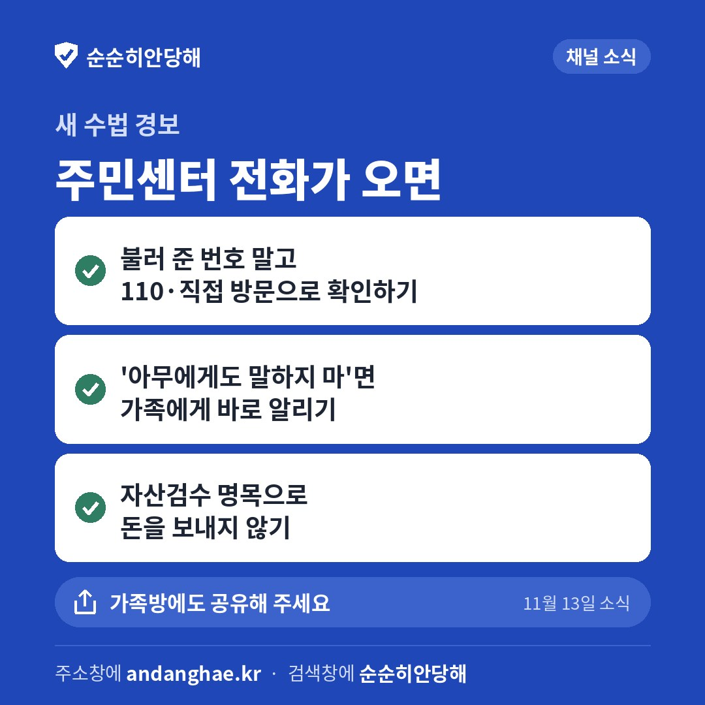

- 카드 1장 [저장] 누르기
- 카카오톡 채널 관리자 앱 → 소식 → 새 소식 작성
- 사진 1장을 넣고, 제목·문구 [복사] → 붙여 넣기
- 게시

1번 저장
제목
"주민센터입니다" 명의도용 경고 전화, 검사 사칭까지 이어지는 보이스피싱이에요
문구
주민센터 직원이라며 "누가 선생님 신분증과 위임장으로 등본을 떼러 왔다"고 알린 뒤, 확인해 보라며 번호를 알려 주는 보이스피싱에 금융감독원이 11월 12일 소비자경보를 냈어요. 그 번호로 걸면 금감원 팀장, 검사가 차례로 나와 계좌가 범죄에 쓰였다며 '자산검수' 명목으로 송금을 요구해요. 첫 전화 사흘 만에 1억 원 넘게 보낸 피해도 있었어요.
▪ 상대가 불러 준 번호로 걸지 말고, 110이나 주민센터 방문으로 직접 확인하기.
▪ '아무에게도 말하지 말라'고 하면 가족과 112에 바로 알리기.
▪ 금감원·검찰·경찰은 어떤 명목으로도 돈을 보내라고 하지 않으니 송금하지 않기.
4단계 수법과 실제 대사 속 위험 신호를 순순히안당해 글에 정리해 두었어요.
자세히 보기
https://andanghae.kr/community-center-relay-phishing
주소를 누르기 망설여지면 검색창에 '순순히안당해'를 쳐서 들어와도 돼요.
가족방에도 공유해 주세요. 소식 화면 오른쪽 위 공유 버튼을 누르면 카톡 대화방으로 바로 보낼 수 있어요.
이 화면은 운영자 확인용이에요(검색에 나오지 않아요). 고칠 곳이 있으면 Claude 대화창에 "이번 주 카드 2장째 이렇게 바꿔줘"처럼 말하면 돼요. 올리지 않아도 괜찮아요.